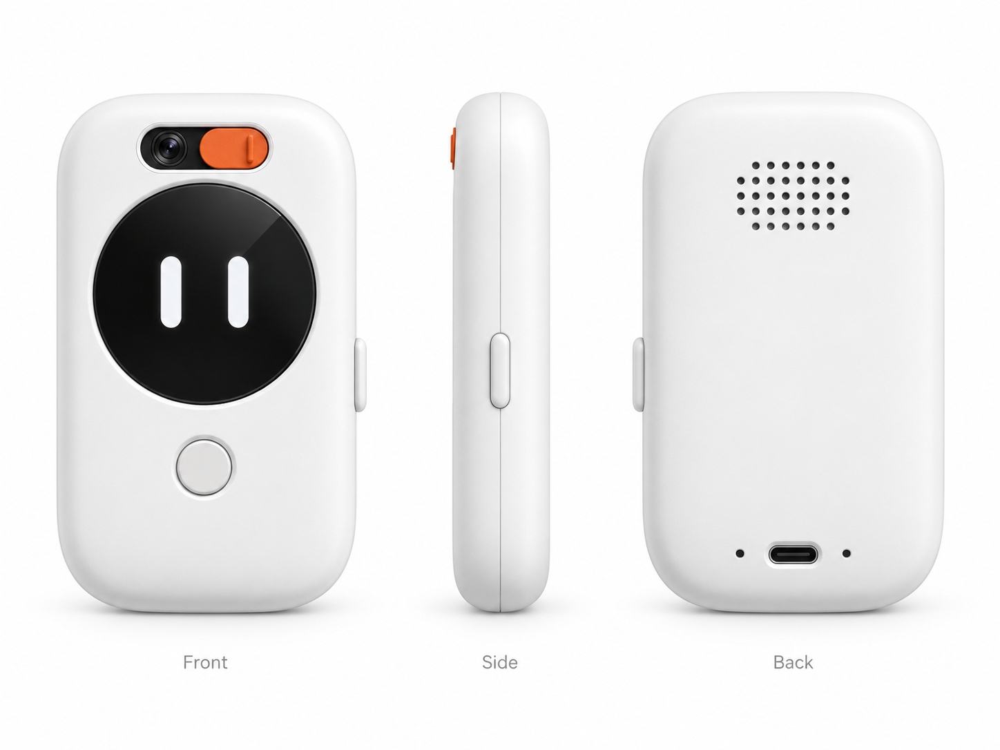
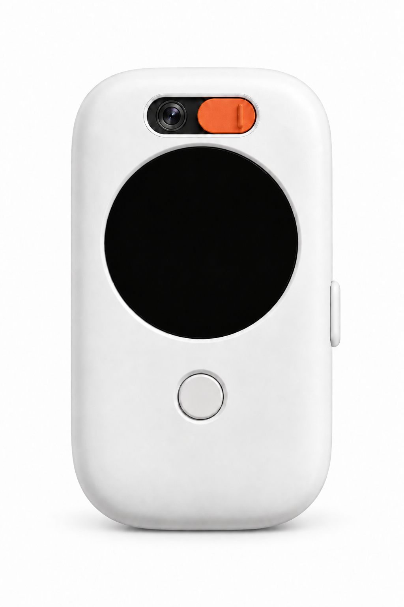
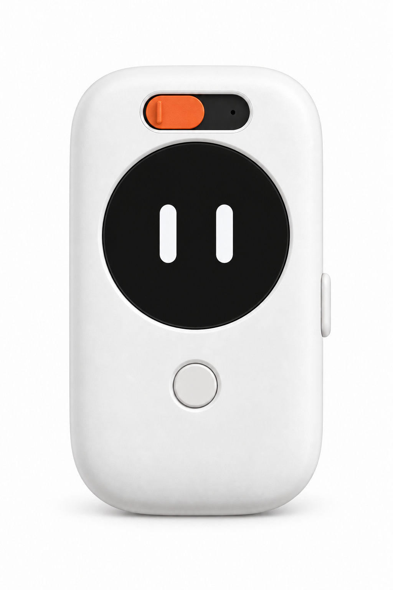

| # | 决策点 | 选项与影响 | 状态 |
|---|---|---|---|
| 1 | 屏形：圆屏 vs 方屏 | 圆屏（渲染图方向，学伴表情载体，360×360 QSPI）外观最优但驱动/触控/宽度代价大；方屏 1.69″（240×280 SPI）省空间、MVP 更快，但外观需要重画。 | 未闭环 |
| 2 | 机身包络：60×90 是否放弃 | 9/24 拍板"约 60×90mm 掌心小主体"；10/8 核算圆屏方案外宽下限 60.50mm、圆屏+相机同前脸需外高 ≥88.50mm，90mm 高仅剩 1.5mm 余量，装不下大圆角、底部的声孔与滑盖机构。 | 冲突待拍板 |
| 3 | 4G 是否进首版 | 内置 LTE 需要独立天线净空区（10/9 试验：42+20+10+4=76mm 宽），直接把机身从"方屏 Wi-Fi 的 63mm 宽"推到"76mm 宽"；Wi-Fi 优先则可保紧凑。 | 未闭环 |
以下三图为产品外观的现行视觉基准（来源：prototype/teamo-ui-flow-html 资产）。UI 边界文档明确：仅参考其机身、圆屏与学伴眼睛作为初始基准，最终方向待本轮评审确认。



| 部位 | 渲染图口径 | 工程约束 / 待核 |
|---|---|---|
| 顶部滑盖槽 | 镜头 + 橙色物理滑盖横置，可滑动遮挡 | 相机安装深度暂占 24mm（MIS5001(B) 25×24 参考，非已确认 120–130° FOV 件）；滑盖机构加高另核；镜头开孔随 FOV 结论调整 |
| 主屏 | 1.8″ 黑圆屏，居中偏上 | 圆屏候选整板宽 55×55mm（D04/D05）或裸屏 48mm 级（D03）；驱动路径（QSPI/双处理器）未闭环 |
| 屏下圆键 | 实体主键 | 按键型号候选已在连接器清单（CN17–18），布局待 CAD |
| 右侧键 | 长条侧键 | 功能分配（电源/音量）待定 |
| 背面上部 | 扬声器孔阵 | 后腔 35×30×10mm 净空 + 5.2mm 喇叭厚度，前后声路隔离，主板/电池不得侵占 |
| 底部 | USB-C | USB-C 座（CN01–03）、SIM 座（若内置4G）待选 |
| 要素 | 方向 | 理由 |
|---|---|---|
| 主体色 | 柔白（哑光） | 渲染图基准；儿童房场景亲和、耐脏折中 |
| 点缀色 | 橙色（仅滑盖一处） | 单强调色原则；滑盖是唯一需要"被一眼看到"的交互件（隐私状态） |
| 屏幕区 | 黑色镜面圆窗 | 表情面孔载体；息屏时整体如"脸" |
| 按键 | 与壳同色浅灰 | 低调，不与滑盖争夺视觉 |
| 材质/工艺 | 塑料前后分壳；本阶段 3D 打印试片 | 壁厚 2mm/侧为初值，先打槽/螺柱/卡扣试片用卡尺校误差，再谈表面工艺 |
设备端 UI 配色另按《设备端UE参考与视觉边界》：深中性底 + 单一强调色；禁止复制参考页的渐变、庆祝粒子与复杂卡片。
注：P 系列基于 Core1106+载板组合，仅作历史计算案例；产品已明确自研主板，下一轮须以真实器件预布局重估，不能直接沿用。
| 提案 | 组合 | 外包络 mm | 外观取舍 |
|---|---|---|---|
| P1 方屏核心板 | 1.69″ 触控方屏 + Core1106 | 61.49×38.00×99.49 | 最接近拍板包络的紧凑工程方向（仍是方屏） |
| P2 圆屏双处理器 | 1.85″ 圆屏整板 + ESP32-S3 | 67.96×42.00×109.96 | 圆屏是产品前提时的工程方向，机身明显放大 |
| P3 裸圆屏产品化 | 裸圆屏 360×360 QSPI | 56.63×35.00×91.63 | 体积最接近掌心理想，但驱动/触控/FPC 未闭环，赶进度不默认 |
| P4 开发板样机 | Pico Max + 1.69″ 屏 | 84.14×52.00×136.14 | 仅工程样机验证链路，不是产品外观 |
| 方案 | 外包络 mm | 通俗大小 | 核心取舍 |
|---|---|---|---|
| S1 方屏＋Wi-Fi | 63.2×102.3×39.1 | 约 6.3×10.2×3.9 cm | 最紧凑，先验证"识别→屏幕反馈→语音播报"主链路；4G 天线无可靠位置 |
| S2 圆屏＋LTE | 76.4×123.6×47.2 | 约 7.6×12.4×4.7 cm | 圆屏外观 + 内置4G 的讨论起点，机身最大 |
| S3 薄圆屏＋大电池 | 73.2×118.4×45.2 | 约 7.3×11.8×4.5 cm | 1.96mm 薄圆屏换 4400mAh 电池；4G 天线隔离预算不足，坚持内置4G还要加宽 |
黄金比例（H≈φW、D≈W/φ）仅是造型目标；最终大小由真实板子、线材、声腔、天线和打印装配决定。S2/S3 已超出"掌心"直觉尺寸，选它们等于放弃 60×90 口径。
| 维度 | 圆屏（渲染图方向） | 方屏 1.69″ |
|---|---|---|
| 外观/角色化 | 学伴"脸"完整，最贴合已定 ID 渲染 | 需重画 ID，表情面孔逻辑要重设计 |
| 像素/信息 | 360×360（一帧 RGB565 约 259KB） | 240×280（约 134KB），刷新带宽压力小 |
| 驱动风险 | QSPI 或双处理器，均未验证 | 4线SPI，仍需 RV1106 驱动移植验证 |
| 对机身的要求 | 外宽 ≥60.5mm 起步（55mm 屏板链），同前脸带相机需高 ≥88.5mm | 屏板 33×41mm，宽度压力小 |
| 触控 | 候选均带 I2C 触控 | 仅触控版可选 |
prototype/teamo-ui-flow-html/public/assets/（three-view / cover-open / cover-closed）